3D-design & print
Fra den første model til en del, du kan bruge.
- Prototyper
- Reservedele og beslag
- Specialtilpassede, funktionelle emner
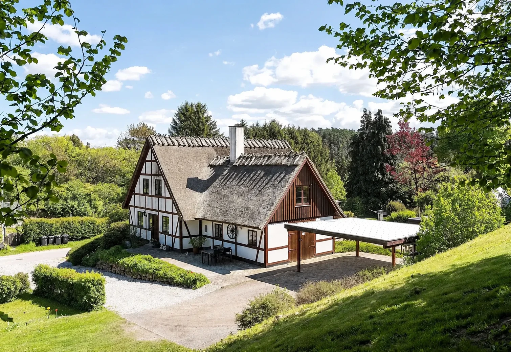
Natur · Teknik · Kreativitet
3D-design, print, laser og tekniske specialløsninger – skabt med hænderne, med omtanke for funktion og holdbarhed.
Se hvad vi kan hjælpe medHolmKlindt · Sjælland
Velkommen til HolmKlindt
HolmKlindt er vores lille værksted for idéer, løsninger og det, der bliver skabt med hænderne. Vi kombinerer naturens materialer med 3D-design, print, laser og elektronik.
Vi lægger vægt på funktion, holdbarhed, personlighed og godt håndværk. Bag værkstedet står Anne og Bente, og vores hus og hverdag er stadig en del af fortællingen.
Fra en enkelt prototype til en specialløsning
Vi arbejder med små og store projekter, tilpasset dine behov. Fra specialdele og robuste kabinetter til skilte, personlige gaver og praktiske løsninger til hjem og hobby.
Fra den første model til en del, du kan bruge.
Præcise detaljer med plads til et personligt udtryk.
Løsninger, hvor delene skal fungere sammen.
Naturens materialer, formet til hverdag og brug.
Materialer med et formål
Vi vælger materialer efter funktion, holdbarhed og udtryk.
Fra den første snak til det færdige resultat
Du kommer med en idé eller en udfordring. Vi taler om behov, funktion og muligheder.
Vi tegner, tilpasser og vælger materialer, så løsningen passer til opgaven.
Vi fremstiller delene, samler og tester – med 3D-print, laser og praktisk håndværk.
Du får en løsning, der er tilpasset dit behov og klar til at blive brugt.
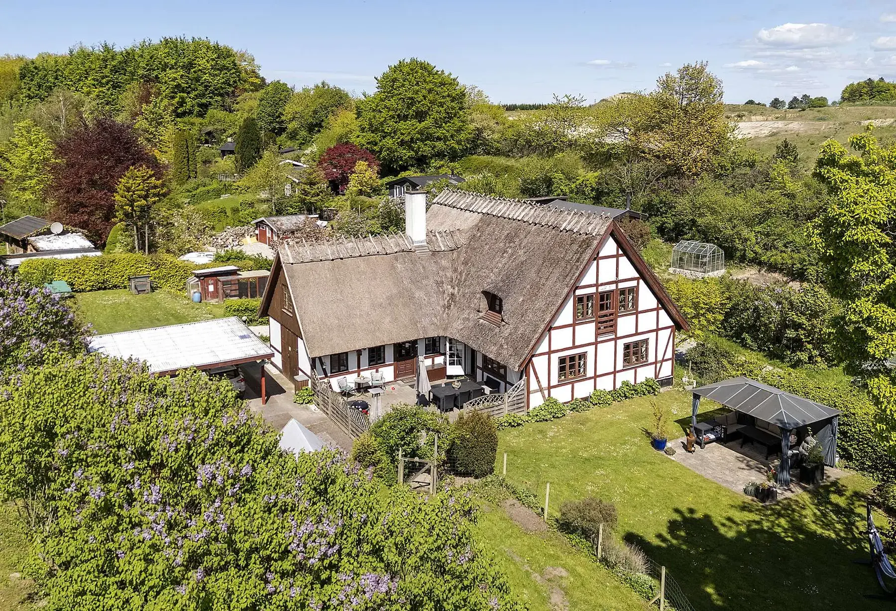
Huset
Et bindingsværkshus midt i det grønne, fyldt med skæve detaljer, varme rum og muligheder. Vi vil passe på det, der allerede har sjæl, og sætte vores eget præg på resten.
Se de første glimt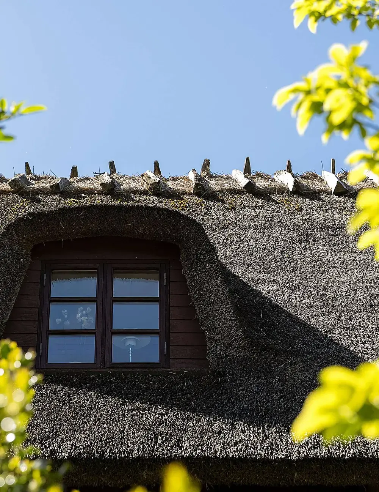
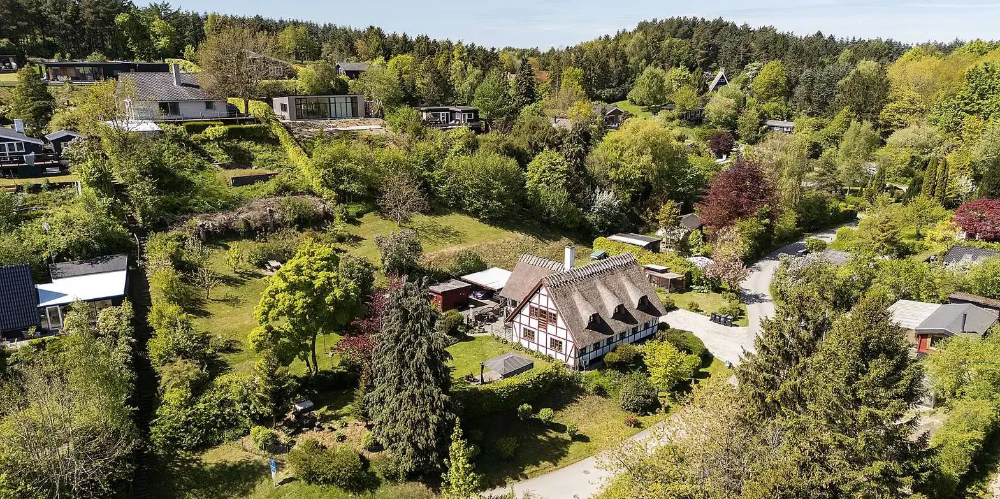
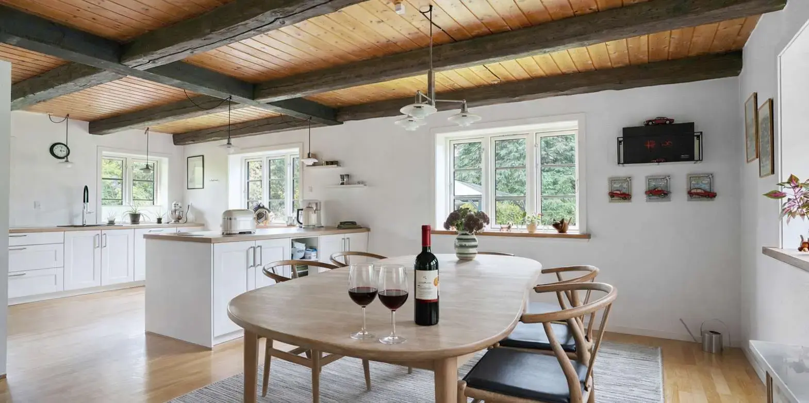
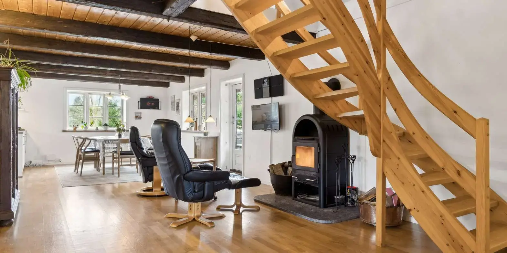
Fra værkstedet
Se vores arbejde med CAD-modeller, 3D-print og praktiske byggeprojekter.
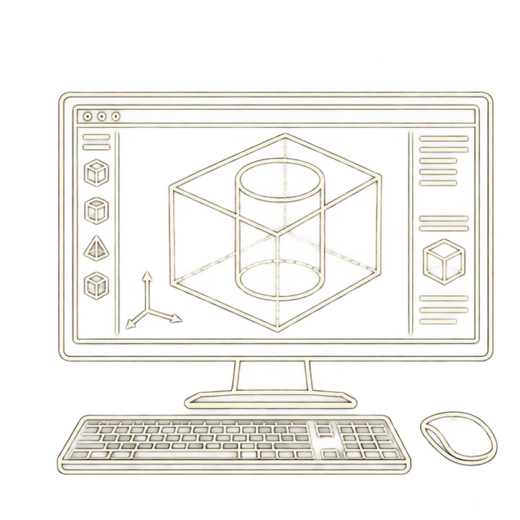
På skærmen
CAD-modeller, konstruktioner og specialdele tegnet fra bunden.
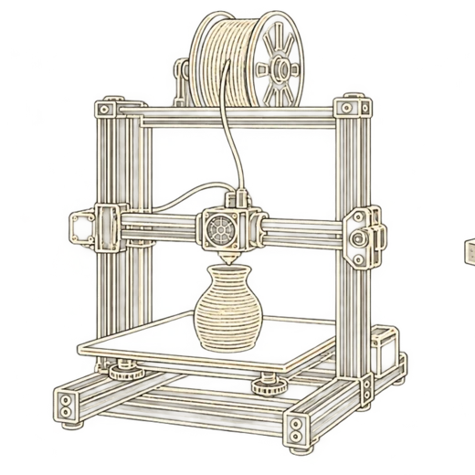
Fra fil til form
Prototyper, brugsting og skæve forsøg, der finder deres form.
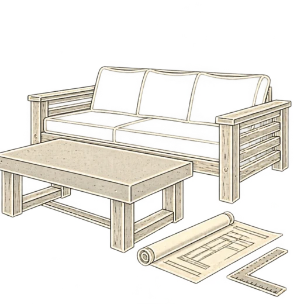
Bygget med hænderne
Betonbordet, terrasseloungen og alt det næste, vi finder på.
Livet omkring os
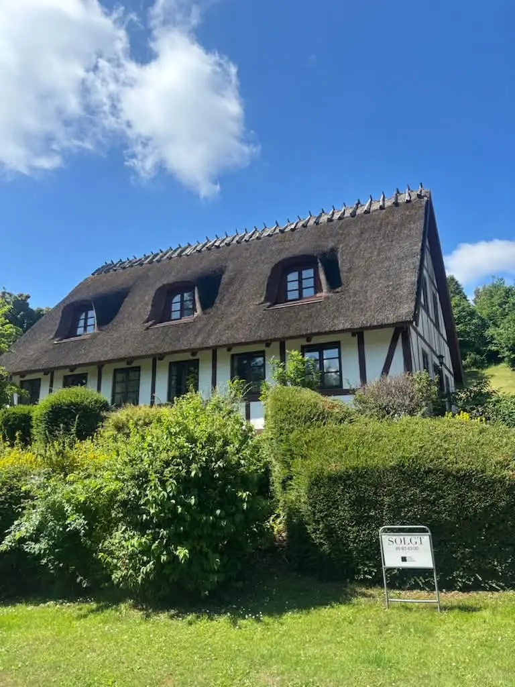
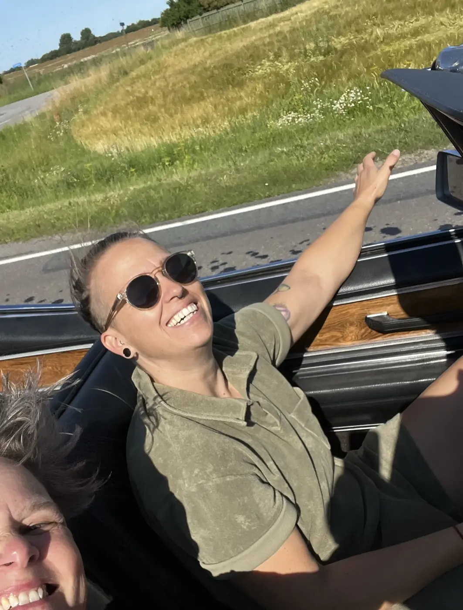
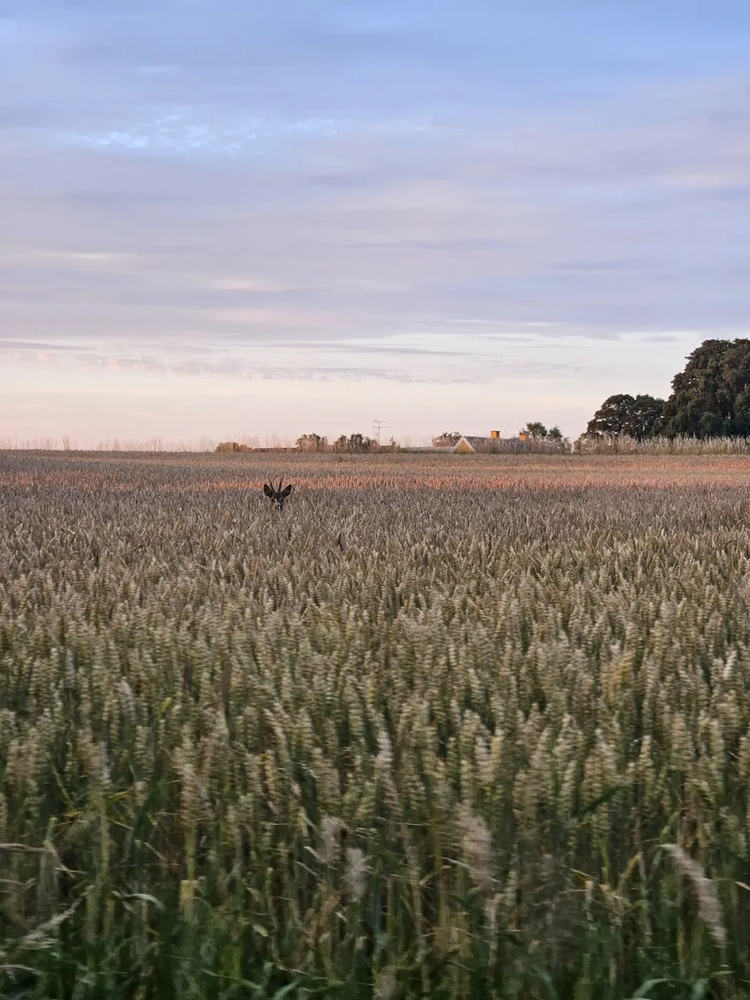
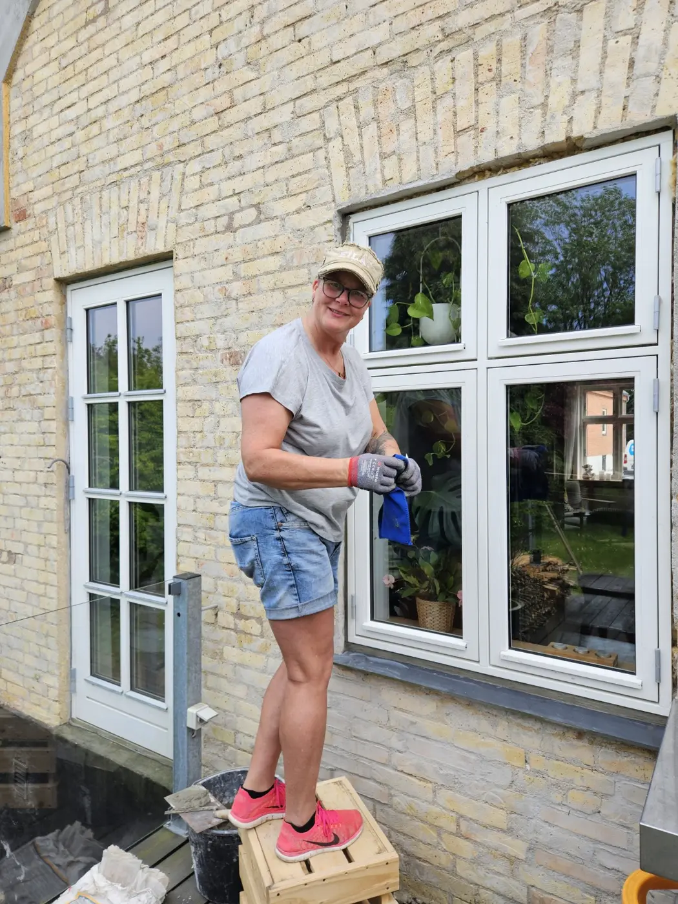
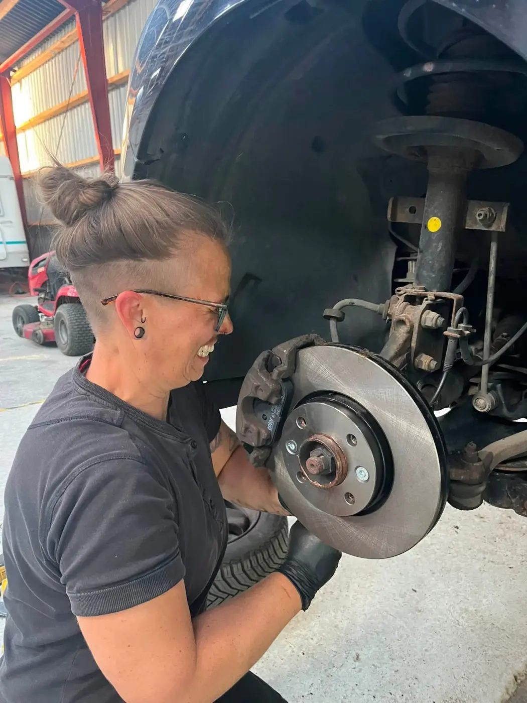
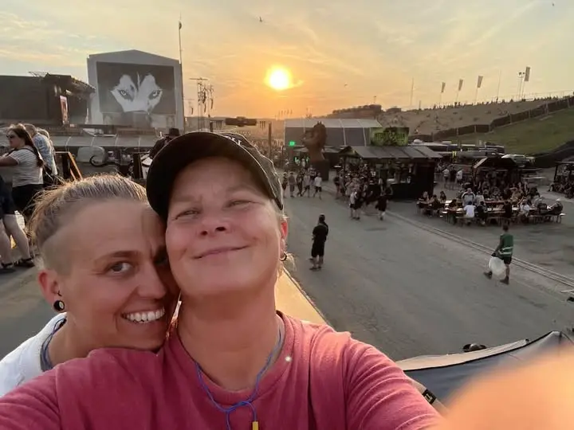
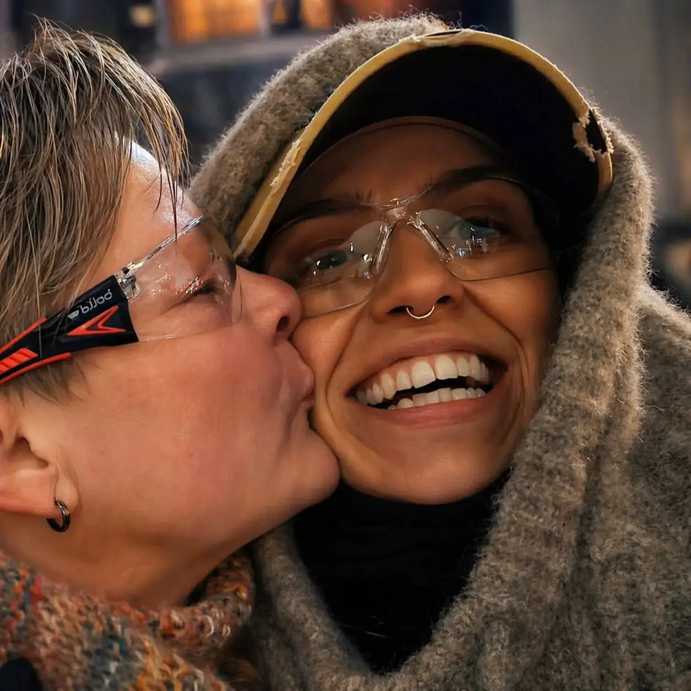
Anne & Bente
Vi er Anne og Bente. Vi bor ved skoven og søen, og det må gerne kunne mærkes i det, vi laver. HolmKlindt er vores fælles sted for hverdagen, nysgerrigheden og arbejdet med hænderne.
Vi holder af naturens materialer og af at finde ud af, hvordan ting virker. Det bliver til både praktiske løsninger, personlige projekter og ting, der gør vores eget hjem til noget særligt.
Kontakt os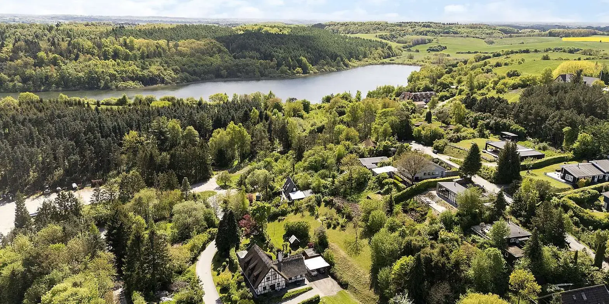
Kontakt
Fortæl os, hvad du gerne vil skabe eller løse.
Så tager vi en snak om mulighederne.